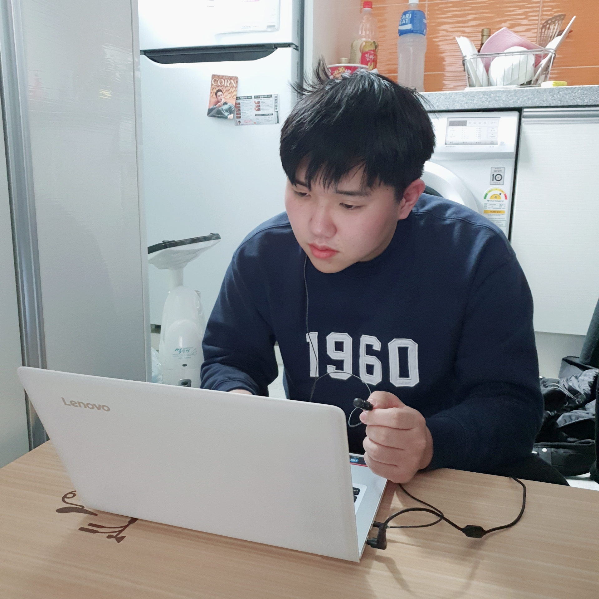

성수위키
한성수

이름
국적
생년월일
거주지
학력
가족관계
병역
MBTI
한성수
대한민국
1998년 10월 9일
서울특별시 중랑구
고려대학교 국어국문학과 재학 중
어머니, 아버지, 남동생(2남 중 장남)
현역 만기 전역
INTP
1. 개요
멋쟁이 사자처럼 10기 회원으로 활동 중인 고려대학교 학생.
2022년 현재 만으로 23살이며, 서울 중랑구 망우동에 거주중이다. 평소 창업에 관심이 많았지만 프로그래밍의 높은 벽에
가로막혀 좌절하던 찰나에 멋쟁이 사자처럼이라는 동앗줄을 간신히 붙잡게 되었다. 청운의 꿈을 안고 늘 누구보다 보람찬 하루를 살아내려고 노력하지만,
그에게 현실은 녹록치 않은 것 같다.
2. 성격
무언가 꽂히기만 하면 그것만 하루종일 주구장창 파는 성격이지만, 그렇게 시동이 걸리기까지 굉장히 오래 걸리는 편이다.
반면 본인의 의지와 관련 없이 해야 되는 일이 있다면 거의 무조건 해내려고 하는 편이다.
사소한 디테일까지 챙기고자 하는 완벽주의가 있지만, 정작 큰 그림을 놓치는 경우가 종종 있다. 계획을 세워서 행동하는 편은 아니며, 쉬는 날에는 가끔 아무도 찾지 않는 곳을 찾아가는 버릇이 있다.
어떤 일이든지간에 여러 가지 변수를 고려하며, 문제를 찾아내는 것을 좋아한다.
MBTI는 INTP이지만 첫만남에는 적극적인 성격으로, 처음 만난 사람들에게는 E가 아닌가 의심되기도 한다.
또한 T이기는 하지만 가끔 F적인 성향이 튀어나올 때가 있어 사람들에게 공감과 위로를 얻으려고 한다.
I 성향과 함께 N 성향도 가지고 있어 혼자서 사색하는 시간이 많으며, 그 스펙트럼은 사소한 의문부터 거대한 철학적 담론까지 굉장히 광범위한 편이다.
3. 경력
- (前)서울삼육고등학교 합창동아리 '뫼울림' 세컨테너
- (前)고려대학교 국어국문학과 밴드 소모임 '놀씨' 베이스 세션
- (前)고려대학교 국어국문학과 사회과학 소모임 '햇새벽' 햇반장
- (前)대한민국 육군 17사단 XXX포병대대 통신분대장
- (現)멋쟁이 사자처럼 10기 정회원
4. 여담
잠이 많은 편이다. 하루에 8시간 이상 자지 않으면 하루종일 피곤함을 느낀다. 하지만 일찍 자는 편은 아니기 때문에 이번 학기에는 1교시 수업을 드랍했다.
노래를 들을 때는 멜론 탑100을 많이 듣는다. 아이돌, 힙합은 좋아하지만 발라드는 정말 싫어한다. 가장 좋아하는 노래는 한요한의 '록시땅'이다.
리그 오브 레전드 전략적 팀 전투 6.5시즌에서 다이아 랭크를 찍었다. 반면 롤 티어는 브론즈를 넘지 못한다. 자주 하지는 않지만 가끔
스팀 게임을 사서 즐기기도 한다. 가장 최근에 플레이한 스팀 게임은 'Baba is you'이다.
요새는 멋사 과제 때문에 게임을 켤 시간이 부족해서 많이 슬퍼하고 있다.
유튜브를 즐겨본다. 가장 좋아하는 채널은 요리 채널, 그 중에서도 승우아빠와 육식맨을 자주 챙겨본다.
절묘하게 학과와 맞아떨어지는 프로필(...)을 가지고 있다. 현재 고려대학교 국어국문학과에 재학중인 그의 생일은 10월 9일, 즉 한글날이다. 또한 1998년생이므로 호랑이띠인데, 고려대학교의 상징동물도 호랑이이다.
또한 성씨까지 한국의 한(韓)자를 사용하고 있기 때문에, 그야말로 한국/고대/국문 3요소를 두루 갖춘 프로필이라고 할 수 있다.
술은 적당히 취할만큼 마시는 것을 선호한다. 주량은 소주 한 병 정도로 추정된다. 맥주나 소맥을 좋아하고, 막걸리나 소주는 그다지 좋아하지 않는다.